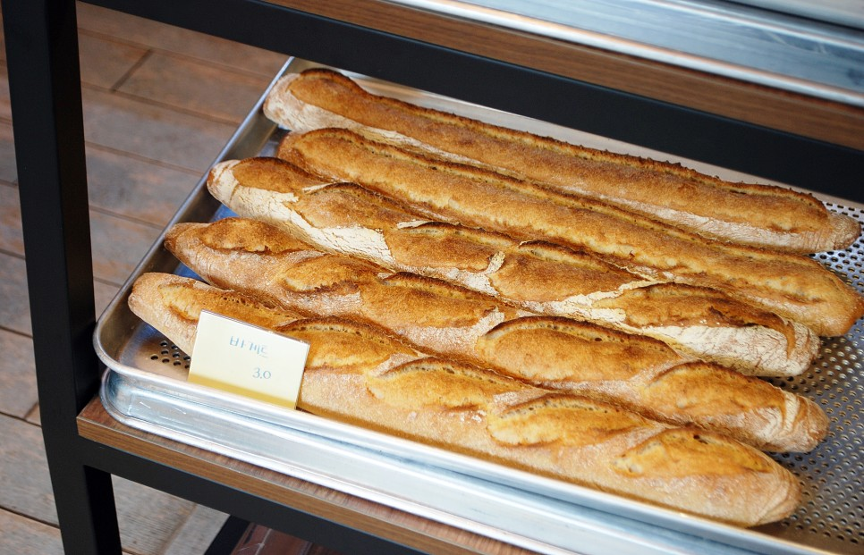

<bread menu>
모든 빵은 당일 판매를 원칙으로 하고 있습니다.
천연 발효종을 사용해 기공이 많고 풍미가 깊은 빵맛을 느끼실 수 있습니다.
모든 빵 반죽에는 버터와 설탕, 게란을 사용하지 않았습니다.
예약은 최소 2~3일 전부터 가능하며 자세히 보고싶은 빵의 이름을 누르면 해당하는 곳으로 빠르게 넘어갈 수 있습니다.
바게트 치즈 치아바타 단호박 크림치즈 깜빠뉴
무화과 깜빠뉴 앙 프레첼 앙버터
<바게트>

겉은 바삭 속은 촉촉한 바게트는 가운데 야채나 치즈를 넣어 샌드위치를 해 드셔도 맛있습니다.